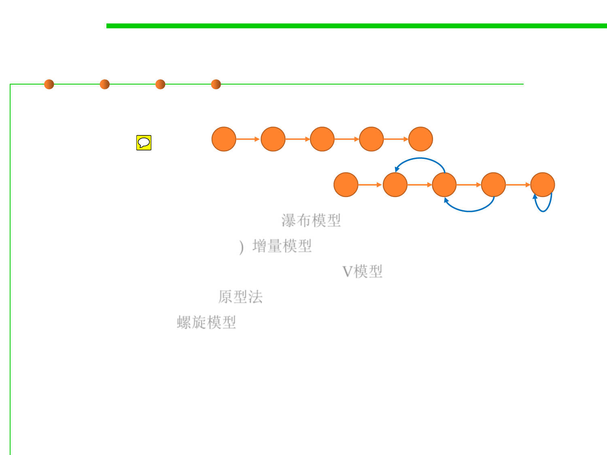

2.1 Software Lifecycle and Configuration Management
Traditional software process models
▪ Two basic types:
– Linear
– Iterative
▪ Existing models:
– Waterfall (Linear, non-iterative) 瀑布模型
– Incremental (non-iterative) 增量模型
– V-Model (for verification and validation) V模型
– Prototyping (iterative) 原型法
– Spiral (iterative) 螺旋模型
▪ Key quality considerations:
– User involvement (adapt to changes)
– Development efficiency, project management complexity
– Quality of software